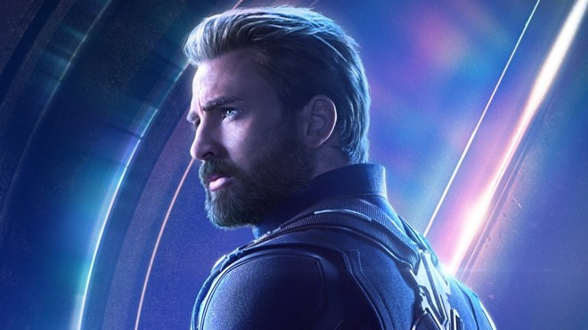
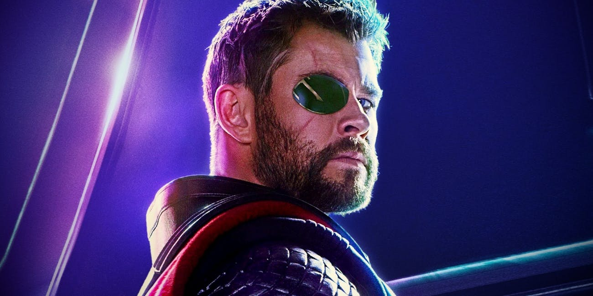
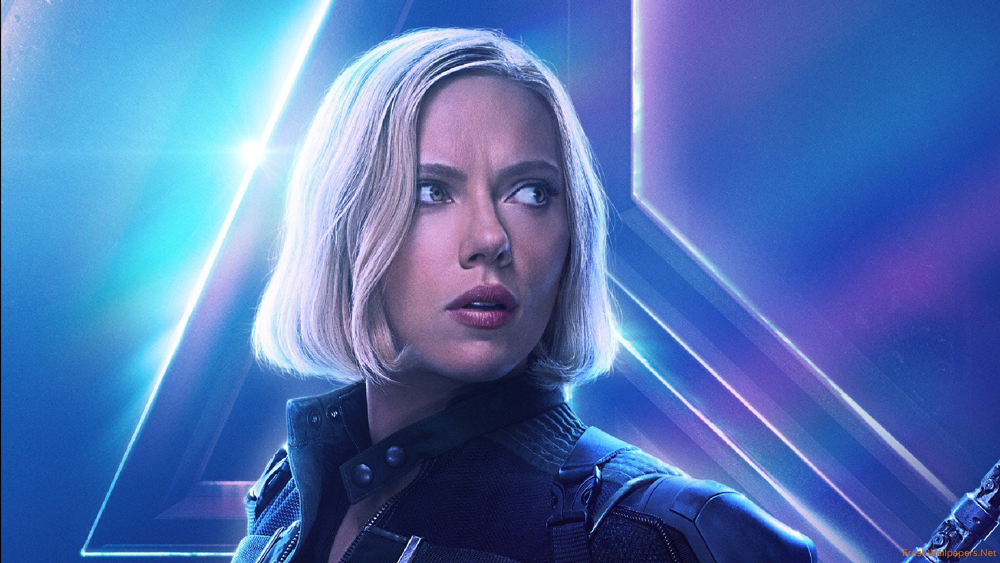
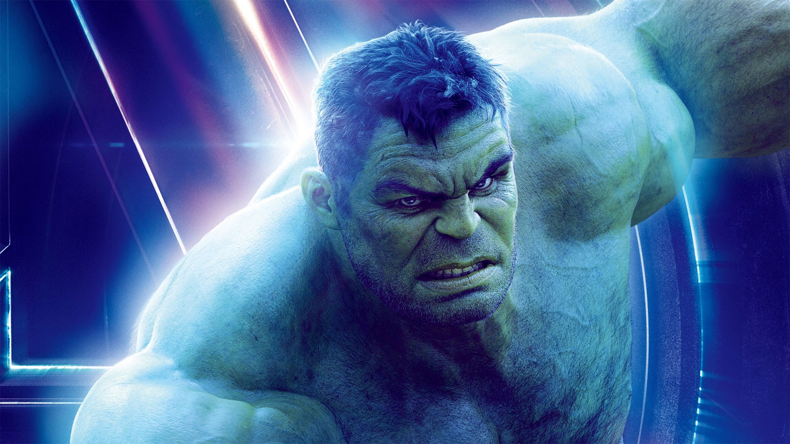
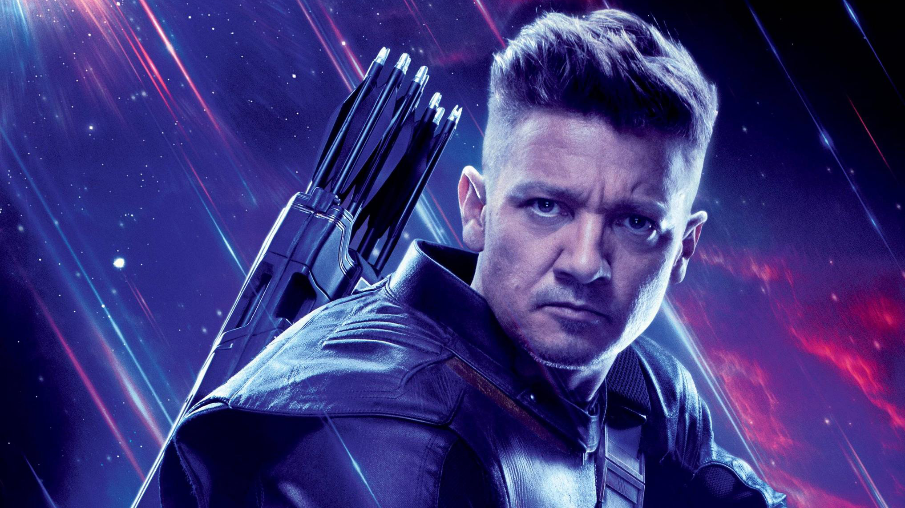

Son un equipo ficticio de superhéroes que aparecen en cómics estadounidenses publicados por Marvel Comics. Etiquetados como los Héroes más poderosos de la Tierra. El equipo, famoso por su grito de batalla de «¡Vengadores unidos!», ha presentado a humanos, mutantes, inhumanos, androides, alienígenas, seres sobrenaturales e incluso antiguos villanos. El equipo ha aparecido en una amplia variedad de medios fuera de los cómics, incluyendo una serie de diferentes series de televisión animadas y películas directas a video.


EDITORIAL
ESCRITOR
Marvel Comics, es una editorial de historietas estadounidense creada en 1939, inicialmente con el nombre de Timely Publications. Entre sus personajes emblemáticos del género superheroico se encuentran Spider-Man, Capitán América, Iron Man, Hulk, Thor, etc. A partir de los años 1990, la compañía se posicionó como una de las principales editoriales de cómics del país.
Stan Lee fue un escritor y editor de cómics estadounidense, además de productor y ocasional actor de cine. El trabajo de Stan Lee fue fundamental para expandir Marvel Comics, llevándola de una pequeña casa publicitaria a una gran corporación multimedia. Todavía hoy, los cómics de Marvel se distinguen por indicar siempre «Stan Lee presenta» en los rótulos de presentación.
IRON MAN
Es un superhéroe ficticio que posee una armadura motorizada que le da fuerza y durabilidad sobrehumanas, vuelo y una gran variedad de armas. La armadura es inventada y usada por Tony Stark. Stark es un genio inventivo cuya experiencia en los campos de las matemáticas, la física, la química y la informática. Es considerado como uno de los personajes más inteligentes del Universo Marvel. En un momento en que Stark fue incapaz de usar su armadura por un período, recibió algo de entrenamiento de combate del Capitán América y se ha vuelto formidable físicamente por su cuenta cuando la situación lo exige.
CAPITÁN AMÉRICA
Es un superhéroe ficticio cuyo nombre real es Steven Rogers. La experiencia de batalla y el entrenamiento de Rogers lo convierten en un experto táctico y un excelente comandante de campo, ya que sus compañeros de equipo con frecuencia respetan sus órdenes en la batalla. Su habilidad con su escudo es tal que puede atacar a múltiples objetivos en sucesión con un solo lanzamiento. La fórmula mejora todas sus funciones metabólicas y previene la acumulación de venenos de fatiga en sus músculos, lo que le proporciona una resistencia mucho mayor que la de un ser humano común. Esto explica muchas de sus extraordinarias hazañas.
THOR
Es un superhéroe ficticio que se basa en la deidad nórdica homónima, es el dios del trueno asgardiano poseedor del martillo encantado, Mjolnir, que le otorga la capacidad de volar y manipular el clima entre sus otros atributos sobrehumanos. Thor es físicamente el más fuerte de los asgardianos, posee una resistencia muy alta a las lesiones físicas que se aproxima a la invulnerabilidad. Como dios nórdico del trueno, Thor puede invocar los elementos de la tormenta (relámpago; lluvia; viento; nieve) y usa Mjolnir como una herramienta para enfocar esta habilidad, aunque el martillo no puede controlar el clima artificial, solo natural.
TRAILERS DE SUS NUEVAS PELÍCULAS



BLACK WIDOW
Es una superheroína ficticia que ha sido mejorada por la biotecnología que hace que su cuerpo sea resistente al envejecimiento y las enfermedades y se recupera por encima de la tasa humana; así como el condicionamiento psicológico que suprime su memoria de los eventos verdaderos en lugar de los implantados del pasado sin la ayuda de medicamentos supresores del sistema especialmente diseñados. Su agilidad es mayor que la de un medallista de oro olímpico. Puede coordinar su cuerpo con equilibrio, flexibilidad y destreza fácilmente. Ella es una estratega, táctica y comandante de campo muy efectiva.Es tiradora y especialista en armas, además de tener un extenso entrenamiento de espionaje. Ella ha dirigido a los Vengadores.
HULK
Es un personaje ficticio que posee el potencial de una fuerza física aparentemente ilimitada que está influenciada por su estado emocional, particularmente su ira. Su alter ego el Dr. Bruce Banner es un físico físicamente débil, socialmente retraído y emocionalmente reservado que después de una exposición accidental a los rayos gamma durante la detonación de una bomba experimental se transforma físicamente en Hulk. Su durabilidad, regeneración y resistencia también aumentan en proporción a su temperamento. Es resistente a lesiones, aunque el grado varía según las interpretaciones, pero ha resistido el equivalente a temperaturas solares, explosiones nucleares, y los impactos devastadores del planeta.
HAWKEYE
Es un superhéroe de ficción que no posee poderes sobrehumanos pero sobresale en el uso de armas a distancia, especialmente el arco y la flecha, y lleva un carcaj que contiene una serie de "flechas de truco" personalizadas. Él es un esgrimista excepcional, acróbata y tirador, habiendo sido entrenado desde la infancia en el circo y por los criminales Trick Shot y Espadachín. Esto incluye una fuerza considerable, como descubrió un supervillano cuando trató de utilizar el arco de 250 libras de fuerza del superhéroe y descubrió que no podía retirar la cuerda para lanzar una flecha. ambién es conocido por usar un "Ciclo del cielo" como su modo de transporte que está diseñado a partir de una moto de nieve comercial y equipado con tecnología antigravitacional.